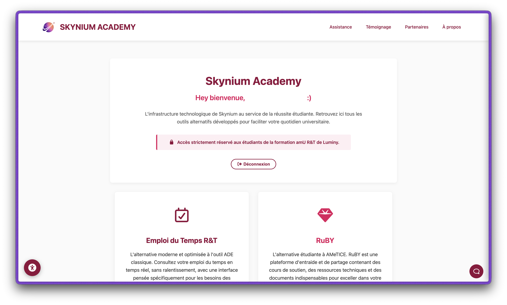
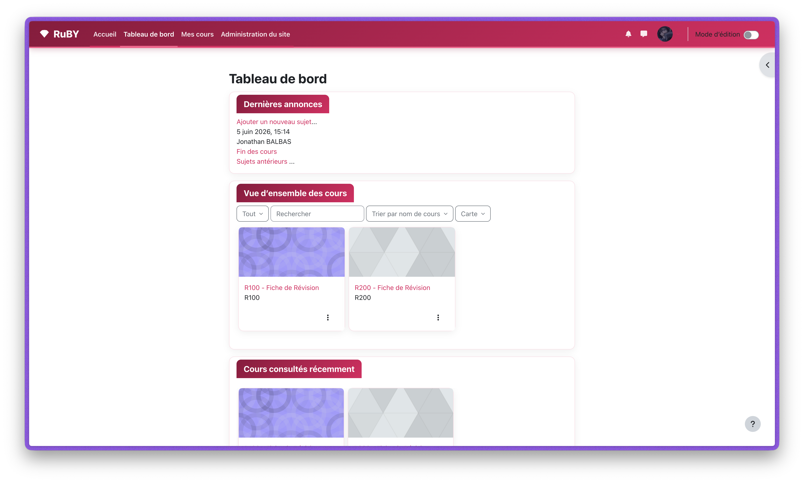
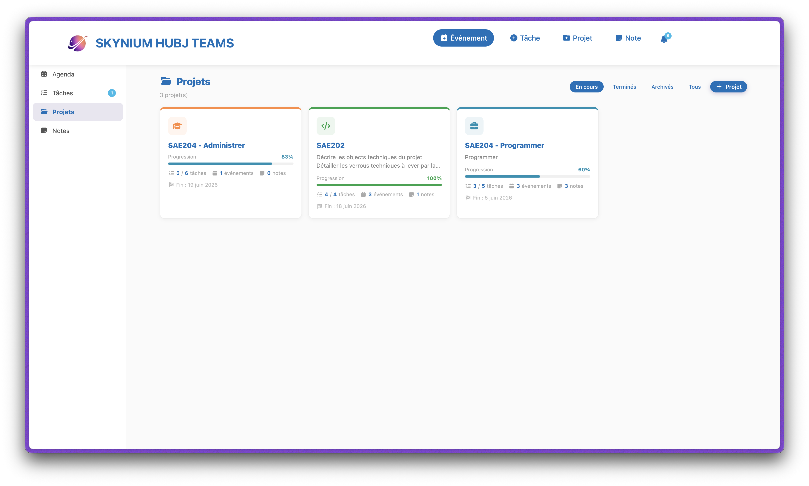
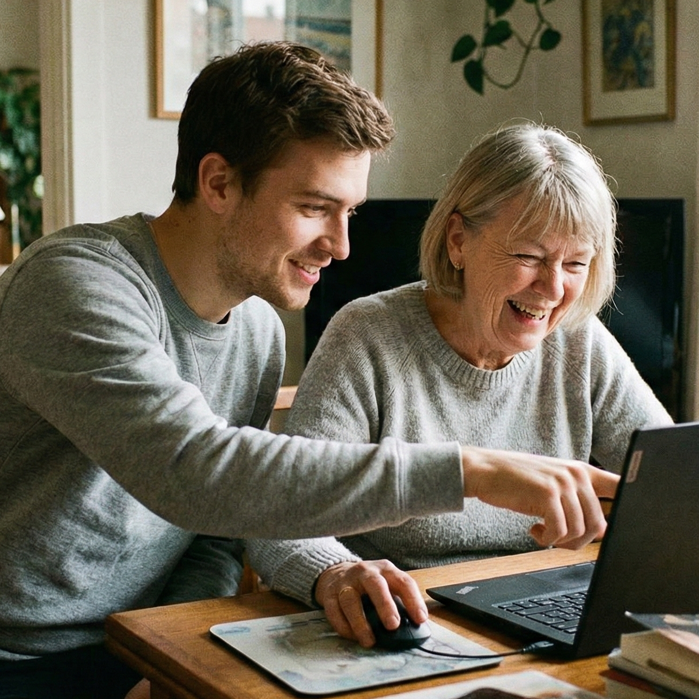
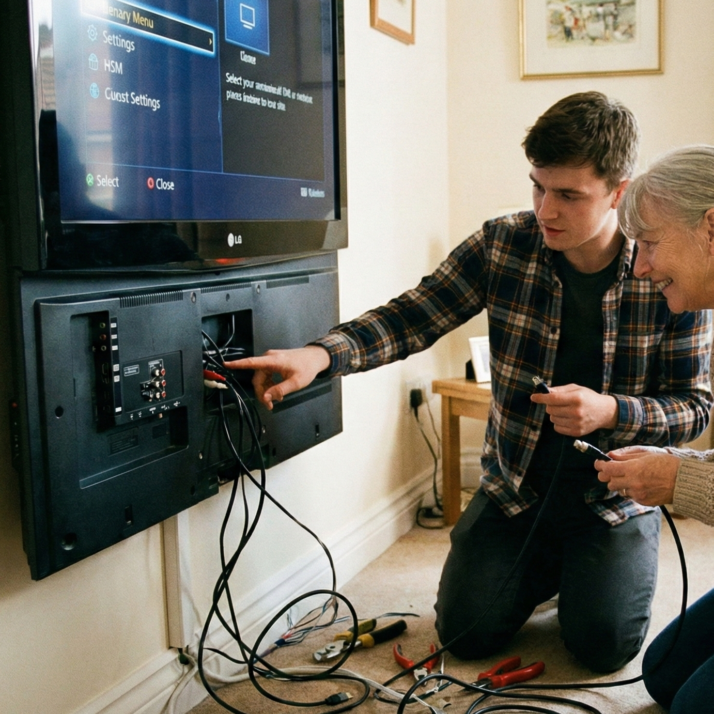
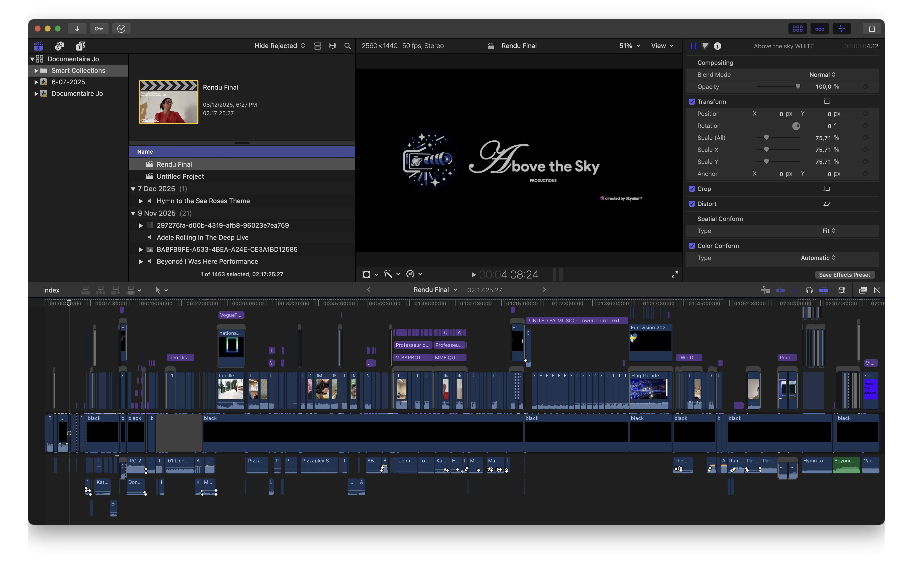
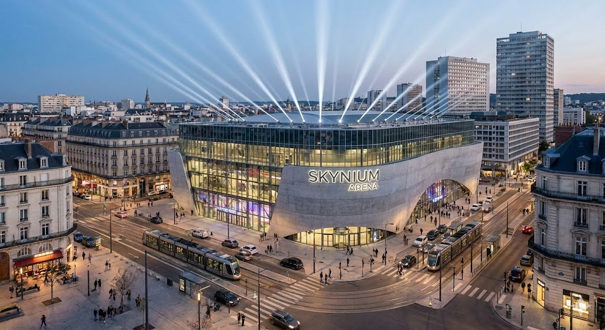
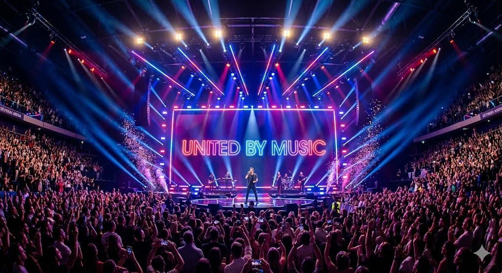

Mes projets
My projects
Des plateformes que j'ai construites pour aider les étudiants, jusqu'à la salle de spectacle dont je rêve depuis l'Eurovision.
From platforms I built to help fellow students, to the show venue I've dreamed of ever since Eurovision.
Skynium ACADEMY
Un véritable environnement de travail pensé pour les étudiants de l'IUT R&T, avec un OIDC personnalisé pour une connexion unifiée et sécurisée à l'ensemble des outils.
A genuine working environment built for IUT R&T students, with a custom OIDC provider for unified, secure single sign-on across all the tools.
Reconnu par plusieurs élèves pour le soutien qu'il apporte tout au long de l'année. L'an prochain, fruit d'une collaboration avec plusieurs étudiants, Skynium ACADEMY s'agrandit : plus d'aide pour les nouveaux première année comme pour ceux qui passent en deuxième année.
Recognised by several students for the support it provides all year long. Next year, born from a collaboration with several students, Skynium ACADEMY is growing: more help for incoming first-years and for those moving up to second year.


RuBY
Une copie conforme d'AMeTICE enrichie de cours de soutien pour les étudiants. L'objectif : retrouver ses repères dans une interface familière, tout en bénéficiant de ressources d'accompagnement supplémentaires.
A faithful clone of AMeTICE enriched with tutoring courses for students. The goal: a familiar interface students already know, plus extra support resources layered on top.
Comme Skynium ACADEMY, RuBY a été reconnu par des élèves pour l'aide concrète qu'il apporte pendant l'année.
Like Skynium ACADEMY, RuBY has been recognised by students for the concrete help it brings throughout the year.
Skynium ACADEMY - Teams
Pour mon équipe de travail sur les SAÉ, j'ai développé Skynium ACADEMY - Teams, une plateforme collaborative qui remplace Microsoft Teams : suivi des tâches, planning des réunions et suivi du temps, réunis dans une seule interface.
For my SAÉ work team, I built Skynium ACADEMY - Teams, a collaboration platform that replaces Microsoft Teams: task tracking, meeting scheduling and time tracking, all in one interface.
Pensé pour la productivité réelle d'une équipe étudiante, il est plus performant que Microsoft Teams et entièrement intégré à l'environnement sécurisé de Skynium ACADEMY.
Designed for a student team's real productivity, it is more performant than Microsoft Teams and fully integrated into the secure Skynium ACADEMY environment.

Bâtir des marques
Building brands
Skynium
Si Skynium a officiellement vu le jour en 2025, c'est un projet qui mûrit en moi depuis 2019. Une mission claire : réconcilier les utilisateurs avec l'informatique grâce à des services de réparation, de maintenance et d'assistance personnalisée.
Although Skynium officially launched in 2025, it has been maturing in me since 2019. One clear mission: reconciling users with computing through repair, maintenance and personalised support.
Passionné d'informatique depuis l'enfance et animé par le désir d'aider, j'ai fondé Skynium pour fusionner ces deux univers et transformer des problèmes techniques complexes en solutions simples, rapides et efficaces.
Passionate about IT since childhood and driven to help, I founded Skynium to merge those two worlds — turning complex technical problems into simple, fast, effective solutions.
skynium.fr ↗


Above The Sky Productions
La branche créative de Skynium, dédiée à la production de contenu audiovisuel. Tout a commencé en filmant des événements familiaux : j'y ai découvert une vraie passion pour la mise en scène et la narration par l'image.
Skynium's creative branch, dedicated to audiovisual content production. It all began filming family events: there I discovered a real passion for directing and visual storytelling.
Désormais associé à un collaborateur étudiant en école de cinéma, nous visons des œuvres plus ambitieuses. À ce jour : 6 réalisations, dont un long-métrage de 2 h et une projection au cinéma (We Were Here, monté sur Final Cut Pro).
Now partnered with a film-school student, we aim for more ambitious work. So far: 6 productions, including a 2-hour feature and a cinema screening (We Were Here, edited on Final Cut Pro).
abovethesky.fr ↗Le grand rêve
The big dream
Skynium Arena
L'idée vient tout droit de ma passion pour l'Eurovision : une immense salle qui rassemble les gens autour d'une scène, avec jeux de lumière et effets visuels impressionnants.
The idea comes straight from my love of Eurovision: a vast venue that brings people together around one stage, with stunning lighting and visual effects.
Je l'imagine équipée d'un système multi-caméras complet pour des captations dignes de la télé. Mon rêve ultime : la construire pour de vrai et y accueillir un jour le concours Eurovision — mais aussi des mariages et des anniversaires.
I picture it fitted with a full multi-camera system for broadcast-grade captures. My ultimate dream: to build it for real and one day host the Eurovision Song Contest — alongside weddings and birthdays.


Note : visuels Skynium Arena générés par IA, à titre d'illustration du concept.
Note: Skynium Arena visuals are AI-generated, illustrating the concept only.
United By Music
Un projet, une idée de collaboration ? Construisons quelque chose qui rassemble.
Got a project or a collaboration in mind? Let's build something that brings people together.
Me contacter